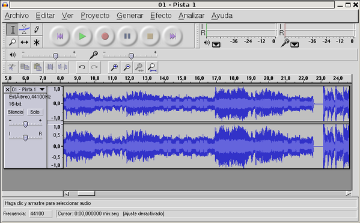

Materials curriculars INF
2.4.1. Conociendo Audacity
Identificar los diferentes elementos disponibles en la interfaz del programa Audacity
Aplicaciones / Sonido y video / Audacity

En los siguientes apartados se muestran las diferentes ocpciones que presenta la interfaz gràfica del Audacity
Este artículo está licenciado bajo Creative Commons Attribution-NonCommercial 2.5 License
Formació del Professorat - CEFIRE